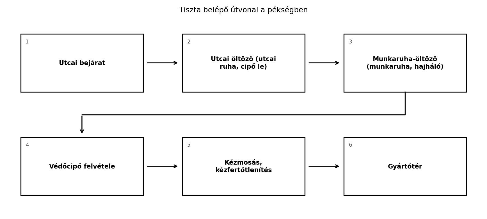

Hajnali háromnegyed négy van. A sütőüzem még csendes, de a nappali műszak után a lisztes rekeszkocsi a kamra előtt maradt, a kézmosó körül vizes a padozat, és a menekülési út tábláját félig eltakarja egy raklap. Te pék tanulóként lépsz be először, és az lenne a feladatod, hogy a lisztzsákot a dagasztógéphez vidd. Ha a munkahely nincs rendben, akkor nemcsak rossz hatékonysággal dolgozol, hanem balesetet is okozhatsz magadnak vagy másnak. Ebben az alfejezetben azt tanulod meg, milyen egy jól kialakított sütőüzem, hogyan közlekedj biztonságosan, hogyan emelj és szállíts anyagot, és milyen üzemi rendet kell megtartanod ahhoz, hogy a termék és a dolgozó is biztonságban legyen.
Képzelj el egy kisebb sütőüzemet madártávlatból. A belépő dolgozó az utcai öltözőből a kézmosón át, munkaruhában lép a gyártótérbe. A liszt és a többi nyersanyag egy másik útvonalon, a raktár felől érkezik, a késztermék pedig a hűtőből a csomagolón és az árukiadón át távozik. A szennyes ládák, az elhasznált olaj, a takarítóeszközök és a hulladék egy harmadik útvonalon mozognak, hogy ne találkozzanak a tiszta termékkel vagy a csomagolóanyaggal. Ez a „tiszta–szennyes” irányok elválasztása. Ha a három útvonal keresztezi egymást, megnő a szennyeződés, a csúszásbaleset és a termékhiba kockázata is.
Az alábbi ábra a személyi belépés egyirányú, tiszta útvonalát mutatja. A szennyes ruha és a tisztítóeszközök útját ettől elkülönítve vezetik.

Definíció. A munkahely a munkavégzés céljára kialakított épület, helyiség, szabadtéri terület vagy munkatér. A sütőiparban a munkahelyhez tartozik a gyártótér, a raktárak, a szociális blokk, a készárukiadó és a gépterek is.
Szabály. Az élelmiszer-feldolgozó üzem belső kialakításánál egyszerre kell érvényesülnie a higiéniai, a munkavédelmi és a tűzvédelmi követelménynek. A padozat legyen sima, hézagmentes, kopásálló, jól tisztítható és csúszásmentes. A falak legyenek világos színűek, moshatók, a sarkoknál lekerekítettek, hogy ne gyűljön bennük lisztpor, tészta vagy penész. A nyílászárók záródjanak jól, a rovarok és rágcsálók ellen védjenek, és a gyártótér bejáratánál legyen lehetőség a kézmosásra, lábbelitisztításra.
Higiénia. Bármilyen padozat-, fal- vagy ajtóhibát azonnal jelezz a műszakvezetőnek. A repedt csempe, a felpúposodott padló vagy a kilazult ajtó nemcsak balesetveszélyes, hanem búvóhelyet ad a mikrobáknak és a kártevőknek is.
Szabály. A gyártótér szellőzését, hőmérsékletét és páratartalmát a technológia és a dolgozók hőterhelése együttesen határozza meg. A kemencék közelében fokozott hőterheléssel kell számolni, ezért a helyi elszívást, a frisslevegő-befúvást és a hővédő ruházatot együtt kell használni. A munkahelyi klíma konkrét határértékeit a munkáltató kockázatértékelésében rögzítik (ellenőrizendő: a pékség kockázatértékelése és a munkahelyekre vonatkozó hatályos munkavédelmi előírások).
Szabály. A világítás legyen egyenletes, ne vakítson, és ne változtassa meg a nyersanyagok vagy a késztermékek színét. A romlandó termékek hűtőjében zárt, nedvességálló lámpatesteket használnak. A vészkijáratoknál és a menekülési utakon biztonsági világítás működik (ellenőrizendő: az üzem tűzvédelmi szabályzata).
Szabály. A zajos és rezgő gépeket (dagasztógép, szeletelőgép, kompresszor) lehetőleg elkülönítve, zajcsillapító burkolattal vagy külön helyiségben kell elhelyezni. A zajterhelés értékelését a munkáltató méréssel vagy a gyártói adatok alapján végzi. Ha a zaj szintje eléri a beavatkozási határt, a munkáltató hallásvédő eszközt köteles biztosítani (ellenőrizendő: a zaj elleni védelemre vonatkozó hatályos határértékek és az üzemi kockázatértékelés).
Szabály. Az ergonómiai kialakítás célja, hogy a dolgozó természetes testtartásban, felesleges hajolgatás, csavarás és nyújtózkodás nélkül végezhesse a munkát. A munkaasztal magasságát, a kemenceajtó nyílását, a kocsi fogantyújának helyzetét úgy kell kialakítani, hogy a kéz, a hát és a láb terhelése elfogadható legyen.
Definíció. A szociális blokk része az utcai öltöző, a munkaruha-öltöző, a mosdó, a zuhanyzó, a kézmosó, az illemhely és a pihenőhelyiség.
Szabály. Az öltözőben el kell választani a tiszta (munkaruha, védőeszköz) és a szennyes (használt ruha, lábbeli) tárolást. Az utcai cipőben nem szabad a gyártótérbe lépni. A gyártótérhez kapcsolódó kézmosónál folyó, meleg víznek, folyékony szappannak, fertőtlenítőnek és papírtörlőnek kell lennie. Az élelmiszerrel dolgozó személy a gyártótérbe lépés előtt és minden szennyező művelet után kezet mos.
Higiénia. Az illemhely nem nyílhat közvetlenül a gyártótérbe. A kilincs és a csap érintése szennyezheti a kezet: kézmosás után a csapot papírtörlővel zárd el. A munkaruha a gyártótéren kívül nem viselhető, az utcai ruha pedig a gyártótérben tilos.
Definíció. A belső közlekedési út az üzemen belüli személy- és anyagmozgatás útvonala. A menekülési út a veszélyhelyzetben elhagyandó épület biztonságos kijáratához vezető, kijelölt út.
Szabály. A közlekedési utakat mindig szabadon kell hagyni. A folyosón, a gép körüli munkatérben, a kemence előtt és a vészkijárat előtt tilos raklapot, rekeszt, lisztzsákot vagy kocsit úgy elhelyezni, hogy az a haladást, a gépi mozgást vagy a menekülést akadályozza. A menekülési útvonalakat zöld színű, utánvilágító vagy megvilágított menekülési jelekkel jelölik.
Szabály. A biztonsági jelek színe és alakja nemzetközileg egységes. A piros tiltó, a sárga figyelmeztető, a kék rendelkező, a zöld mentő vagy megengedő jelzést ad. A kör általában tiltást vagy rendelkezést, a háromszög figyelmeztetést, a négyzet vagy téglalap tájékoztatást vagy menekülést jelöl.
| Szín | Alak | Jelentés | Példa a pékségben |
|---|---|---|---|
| piros | kör | tiltás | „Tilos járni a futó gép alatt” |
| sárga | háromszög | figyelmeztetés | „Figyelem, forró felület” |
| kék | kör | rendelkezés | „Védőkesztyű használata kötelező” |
| zöld | téglalap/négyzet | menekülés, biztonság | „Vészkijárat” |
Fekete-fehér nyomatban a jel alakja és felirata hordozza a jelentést: áthúzott kör a tiltás (belépni tilos, tilos vízzel oltani), háromszög a figyelmeztetés (forró felület, behúzásveszély, gyúlékony anyag), telt kör a rendelkezés (hallásvédő, kézmosás), téglalap a mentés és menekülés (menekülési út, elsősegély, vészkijárat). A HTML-kiadásban a jelek színesek, és az „Ismerd fel!” gombbal gyakorolható a csoportba sorolás.
Szabály. A biztonsági jelzéseket tilos eltakarni, leszerelni, lefesteni vagy áthelyezni. Aki sérült vagy hiányos jelzést lát, azonnal jelentse.
Definíció. A kézi anyagmozgatás minden olyan művelet, amelynél a dolgozó saját izomerejével emel, visz, húz, tol, leereszt, tart vagy áthelyez terhet. Gépi anyagmozgatásnál a műveletet targonca, kézi raklapemelő, szállítószalag vagy emelőgép végzi.
Szabály. A kézi emelés előtt mindig mérlegeld a terhet: nézd meg a tömegét, a fogás lehetőségét, az út hosszát és a padozat állapotát. Ha a teher tömegét nehéz megbecsülni, kérj segítséget vagy használj gépi eszközt. Az emeléshez hajlítsd be a térded, tartsd a hátad egyenesen, a lábbal emelj, és a terhet közel vidd a testedhez. A hirtelen csavarást, a görbe háttal, egyenes lábbal való emelést kerüld.
Figyelem. A lisztzsák tömegét a zsák címkéje vagy a szállítólevél adja meg. A 25 kg-os lisztzsák gyakori, de nem szabad reflexből, görbe háttal felkapni. A rekesz kisebb tömege ellenére is veszélyes lehet, mert a fogása nem mindig ergonomikus. A kocsi tologatásánál a kocsi tolása biztonságosabb, mint a húzása, mert a tolásnál jobban látod az utat, és kisebb a vállra ható csavaróerő.
A helyes emelésnél (1–5) a pék terpeszben áll, a zsák a lábai között van, térdből guggol le, a háta egyenes, a terhet magához húzza, és lábizommal, csavarás nélkül emel. A hibás képen (6–9) nyújtott térddel, görbe háttal, a testtől távol tartott teherrel és emelés közbeni csavarással dolgozik – ilyenkor az ágyéki gerincszakasz kapja a legnagyobb terhelést. Nehéz tehernél kétfős emelés (10) vagy kocsi, raklapemelő (11) a megoldás.
Gépbiztonság. Gépi anyagmozgató eszközt – kézi raklapemelőt, targoncát, szállítószalagot – csak a munkáltató által elrendelt betanítás után, felügyelettel kezelhetsz. A gép üzembe helyezése előtt ellenőrizd a teherbírást, a kerekeket, a fékeket, a vészleállítót és a teher rögzítését. Sérült, túlterhelt vagy bizonytalanul álló rakományt nem szabad megmozdítani.
Szabály. A kézi tehermozgatás napi megengedhető mennyiségét a munkáltató kockázatértékelésében vagy ergonómiai szabályzatában rögzítik (ellenőrizendő: a pékség kockázatértékelése). Ha a munka során hát- vagy derékfájást, zsibbadást, szédülést érzel, szakítsd félbe a műveletet, és jelezd a műszakvezetőnek.
Definíció. A raktározás a nyersanyagok, csomagolóanyagok, félkész és késztermékek szabályozott körülmények közötti elhelyezése. A raktározás típusa lehet állványos, polcos, raklapos vagy ömlesztett (pl. silós liszt).
Szabály. A raktárban a polcok és állványok legyenek stabilak, a felső polcra ne kerüljön nehéz anyag. A sérült raklapot, a kiálló szöget, a repedt polcot azonnal jelenteni kell. A raktárban a csúszásmentes, egyenes közlekedő utat szabadon kell hagyni.
Szabály. A nyersanyagokat a felhasználás sorrendjében, a FIFO-elv szerint helyezd el: előbb beérkezett tétel kerüljön előre, hogy előbb felhasználják. A felbontott zsákot, dobozt zárd le, és jelöld a nyitás dátumával. A különböző anyagokat – liszt, cukor, só, élesztő, adalékanyag, tisztítószer – egymástól elkülönítve tárold.
Allergén. A dióféléket, a szezámmagot, a tejet, a tojást, a gluténtartalmú lisztet és az egyéb allergén összetevőket a raktárban is úgy kell tárolni, hogy ne szennyezzék egymást. A kiömlött, porzó anyagot azonnal fel kell takarítani, mert a lisztpor és a magliszt allergén keresztszennyeződést okozhat.
Előírás. A munkavédelemről szóló 1993. évi XCIII. törvény és a munkahelyek munkavédelmi követelményeinek minimális szintjéről szóló miniszteri rendelet (ellenőrizendő: a hatályos rendelet száma és címe) a munkáltató kötelezettségévé teszi a biztonságos és egészséget nem veszélyeztető munkahely kialakítását. Az élelmiszer-higiéniai rendelet, a 852/2004/EK rendelet II. melléklete az élelmiszer-előállító helyiségek felületeinek tisztíthatóságára, a szellőzésre, a szociális létesítményekre és a hulladékkezelésre is követelményeket fogalmaz meg (ellenőrizendő: az aktuális mellékleti pontok). A tűzvédelmi szabályzat, az OTSZ (54/2014. (XII. 5.) BM rendelet – ellenőrizendő a hatályosság) a menekülési utak szabadon tartását és a biztonsági jeleket írja elő.
Eljárás. A műszak elején a tanuló sétáljon végig a munkaterületén, és az alábbi lépéseket ellenőrizze. A hibát jegyezze fel, és jelentse a műszakvezetőnek. A lista nem helyettesíti a munkáltató hivatalos ellenőrzését, de segíti a tanulót a biztonságos munkakezdésben.
Példa. A tanuló az ellenőrzőlista 3. pontját vizsgálja. A gyártótérben a dagasztógép mellett vizes, enyhén lisztes folt van. A padozat csempéje ép, de a víz miatt csúszik. A tanuló a hibát bejegyzi: „dagasztó melletti padló vizes, csúszásveszély”. A helyesbítés: a foltot azonnal fel kell törölni, a víz forrását meg kell szüntetni, és a területre figyelmeztető táblát kell kihelyezni (ellenőrizendő: az üzemi takarítási utasítás).
Számítás. Egy kézi szállítókocsi teherbírása 400 kg (tanulási példa, ellenőrizendő: a kocsi gyártói adatlapja). A tanuló 10 darab 25 kg-os lisztzsákot és 12 darab 12 kg-os rekeszt szeretne egyszerre vinni. A teljes tömeg:
A kocsi teherbírása 400 kg, ezért ez a rakomány éppen megengedett. Ha egy 13. rekeszt is feltennének, a tömeg lenne, ami már túlterhelést jelentene. A túlterhelt kocsi nehezebben kormányozható, és a kereke vagy a váza is megsérülhet.
Példa. A tanuló a lisztzsákot a raklapról a dagasztógép melletti állványra emeli. A zsák 25 kg-os. Helyes sorrend: a zsákot először közel húzza a raklap széléhez, a lábát vállszélességűre állítja, behajlítja a térdét, a hátát egyenesen tartja, a zsák sarkait erősen megfogja, és a lábizmaival emel. A zsákot a testéhez szorítva, csavarás nélkül fordul az állvány felé, majd a polcra engedi. Ha az állvány magas, akkor köztes magasságú asztalt vagy emelőt használ.
Egy tanuló a reggeli műszakban lisztzsákot emelt a raktárból a dagasztóhoz. A műszakvezető szólt, hogy a menekülési út előtt áll egy üres rekeszkocsi, tegye félre. A tanuló sietett, a lisztzsákot görbe háttal, egyenes lábbal kapta fel, majd hirtelen elfordult, mert meghallotta a kocsi csikorgását. Dereka hirtelen megfájdult, a zsákot le kellett tennie. A sérülés nem járt azonnali orvosi ellátással, de a műszakból ki kellett állnia. Az utólagos elemzés szerint a hiba nemcsak a helytelen emelési technika volt, hanem az is, hogy a menekülési utat elzárták, ezért a tanuló kapkodott. A helyes gyakorlat: először a menekülési utat kell szabaddá tenni, utána a terhet emelni, és közben a megfelelő testtartást megtartani.
A munkahelyi kialakítás megfelelőségét a munkavédelmi és a higiéniai ellenőrzőlista alapján lehet gyorsan felmérni. Akkor jó a terület, ha a padozat száraz, ép és csúszásmentes; a falak és a nyílászárók tiszták, sértetlenek; a világítás egyenletes; a közlekedési utak szabadok; a biztonsági jelek láthatók; a szociális blokk tiszta és felszerelt; a raktárban a polcok stabilak és az anyagok elkülönítve tároltak. A gyakori eltérés: a raklap a menekülési úton, a vizes padozat a kézmosó körül, a felbontott lisztzsák a polcon, a hiányzó papírtörlő vagy a leszerelt biztonsági jel. Mindezeket a tanuló nem hagyhatja szó nélkül, mert a következményük baleset vagy élelmiszer-biztonsági hiba lehet.
A vizes, lisztes padlón való átsietés. Tünet: a dolgozó megcsúszik, a kezében lévő termék vagy eszköz elrepül. Ok: a türelmetlenség és a kijelölt száraz közlekedő út figyelmen kívül hagyása. Helyes gyakorlat: a foltot azonnal fel kell törölni, és a száraz, szabad útvonalat kell használni.
A lisztzsák görbe háttal, egyenes lábbal történő felemelése. Tünet: hirtelen derékfájás, izomhúzódás. Ok: a hátizmok túlterhelése, a láb izmainak kihagyása. Helyes gyakorlat: térdből, egyenes háttal, a terhet a testhez közel tartva emelni.
A menekülési út raklappal vagy rekeszkocsival való elzárása. Tünet: a vészkijárat megközelíthetetlen, tűz esetén a bent lévők nem tudnak időben kijutni. Ok: a raktározási fegyelem hiánya. Helyes gyakorlat: a menekülési útvonalat mindig szabadon hagyni, a kitelepített anyagot a kijelölt tárolóhelyre vinni.
A biztonsági jel eltakarása vagy leszerelése. Tünet: a dolgozó nem tudja, hogy az adott gép mellett védőkesztyűt kell viselni, vagy hogy merre van a vészkijárat. Ok: a jelzés jelentőségének lebecsülése. Helyes gyakorlat: a jelzéseket érintetlenül hagyni, sérülésüket azonnal jelenteni.
1. feladat (A). Sorolj fel legalább öt követelményt, amelyet a sütőüzem gyártóterének padozatával és falaival kapcsolatban be kell tartani.
2. feladat (A). Egy raklapon 14 darab 25 kg-os lisztzsák van. A raklap saját tömege 25 kg (tanulási példa). Mennyi a raklap össztömege? A kézi raklapemelő 400 kg teherbírású. Felemelheti-e a tanuló a raklapot? Válaszodat számítással indokold!
3. feladat (B). A pékségben az ellenőrzőlista során a tanuló azt tapasztalja, hogy a vészkijárat előtt üres rekeszek állnak, a menekülési út táblája le van takarva egy kocsival, és a kézmosónál nincs papírtörlő. Az ellenőrzőlista 6. és 1. pontját alkalmazva mit kell tennie a tanulónak?
4. feladat (B). Egy kézi szállítókocsi teherbírása 350 kg (tanulási példa, ellenőrizendő: gyártói adat). Hány darab 12 kg-os rekeszt tehetsz fel, ha már van rajta 4 db 25 kg-os lisztzsák? Mennyi a megengedett maradék teher tömeg?
5. feladat (C). Tervezd meg egy kis pékség tiszta–szennyes útvonalát. Az öltöző, a kézmosó, a gyártótér, a nyersanyagraktár, a készárukiadó és a hulladéktároló helyiségét kell elrendezned úgy, hogy a tiszta és a szennyes út ne keresztezze egymást. Rajzold le vagy írd le diagramban a forgalmi irányokat!
6. feladat (D). A tanuló a reggeli műszakban a dagasztógép melletti lisztkádra emeli a 25 kg-os lisztzsákot. A zsák a raklapon fekszik, a kád 90 cm magas. Ismertesd lépésről lépésre a biztonságos anyagmozgatást! Milyen hibát követhet el, ha siet?
1. feladat (A). A gyártótér padozata legyen sima, hézagmentes, kopásálló, csúszásmentes és jól tisztítható. A falak világos színűek, moshatók, a sarkoknál lekerekítettek. A fal- és padozatburkolat ne engedje a vizet, a lisztport vagy a zsírt beszivárogni. A sérült burkolatot azonnal javítani kell. A padlóösszefolyók legyenek ráccsal ellátva, és rendszeresen tisztítva.
2. feladat (A). A raklap össztömege:
A raklapemelő teherbírása 400 kg, ezért a raklapot () a megengedett terhelésen belül fel lehet emelni. A számítás ellenőrzése: a zsákok kg, a raklap saját tömegével együtt 375 kg; egység kg, nagyságrend helyes.
3. feladat (B). Az ellenőrzőlista szerint a vészkijárat előtti rekeszeket el kell távolítani, és a menekülési út tábláját szabaddá kell tenni. A kézmosónál a hiányzó papírtörlőt a műszakvezetőnek azonnal jelezni kell, és a kézmosó feltöltéséig a gyártótérbe lépés nem végezhető el a higiéniai szabályoknak megfelelően. A tanuló a hibákat a napi ellenőrzőlistán rögzíti, és gondoskodik a helyesbítésről, illetve a jelentéséről.
4. feladat (B). A lisztzsákok tömege:
A megengedett maradék teher:
A 12 kg-os rekeszekből felvehető mennyiség:
Egész számra lefelé kerekítve 20 rekesz tehető fel. A maradék, tehát összesen , ami a 350 kg-os teherbíráson belül van.
5. feladat (C). Egy lehetséges elrendezés: az utcai bejárat az utcai öltözőbe vezet, onnan a munkaruha-öltözőbe; átöltözés után a gyártótér bejáratánál lévő kézmosónál kezet mos, és csak ezután lép a gyártótérbe. A nyersanyagraktár külön bejáraton, közvetlenül a gyártótérhez kapcsolódik. A készáru a gyártótérből a hűtőn és a csomagolón át az árukiadóba halad. A hulladéktároló és a tisztítóeszköz-raktár a gyártótéren kívül, a hátsó kijáratnál van, és a szennyes útvonalat a tiszta útvonaltól ajtóval vagy zsilipkapuval elválasztják. A tiszta anyagok és a szennyes anyagok útja nem keresztezheti egymást.
6. feladat (D). A biztonságos anyagmozgatás lépései: 1. Ellenőrizd a padozatot: nincs-e víz, liszt, olaj a raklap és a lisztkád között. 2. Mérd fel a zsák tömegét, és győződj meg arról, hogy elbírod-e; ha nem, kérj segítséget vagy használj kézi emelőt. 3. Húzd a zsákot a raklap széléhez, hogy ne kelljen messzire hajolni. 4. Állj vállszélességű terpeszbe, hajlítsd be a térded, tartsd a hátad egyenesen. 5. Fogd meg a zsák két sarkát erősen, és a lábizmaiddal emeld fel, a zsákot közben a testedhez közel tartva. 6. A kád felé fordulj a lábfejeddel együtt, ne csavarj a törzseddel. 7. A kádat közelítsd meg, és a zsákot óvatosan engedd bele, miközben a hátad továbbra is egyenes. 8. Ha a kád magas, használj köztes magasságú asztalt, és ne emelj hirtelen.
Sietésnél a tipikus hiba: a zsákot görbe háttal, egyenes lábbal felkapni, majd a törzset hirtelen elcsavarni. Ez a derék és a hát sérüléséhez vezethet. A másik hiba: a zsákot messze, nyújtott karral vinni, ami a vállat és a hátat terheli.
A sütőüzem belső kialakításánál a higiéniai, a munkavédelmi és a tűzvédelmi követelmények együtt érvényesülnek. A gyártótér padozata sima, hézagmentes, csúszásmentes és jól tisztítható; a falak világos színűek, moshatók, a sarkok lekerekítettek; a nyílászárók védik az üzemet a kártevőktől. A szociális blokkban el kell választani a tiszta és a szennyes ruházatot. A közlekedési és menekülési utakat szabadon kell hagyni, a biztonsági jeleket (piros tiltás, sárga figyelmeztetés, kék rendelkezés, zöld menekülés) láthatóan kell tartani. A kézi anyagmozgatásnál a terhet közel kell húzni, térdből, egyenes háttal kell emelni, és a kocsit tolni biztonságosabb, mint húzni. A gépi anyagmozgatást csak betanítás után, felügyelettel szabad végezni. A raktározásnál a FIFO-elvet kell követni, a felbontott csomagolást le kell zárni, az allergén anyagokat el kell különíteni. A napi ellenőrzőlista segíti a tanulót a munkahelyi rend biztonságos felmérésében.
Továbbvitt eredmény. A munkahelyi kialakítás, a közlekedési utak, a biztonsági jelek és az anyagmozgatás itt tanult fogalmait a Munkakörnyezeti hatások a pékségben és az egyéni védőeszközök alfejezetben használjuk tovább, amikor a hő-, zaj-, por- és vegyszerterheléssel, valamint a védőeszközök kiválasztásával foglalkozunk.